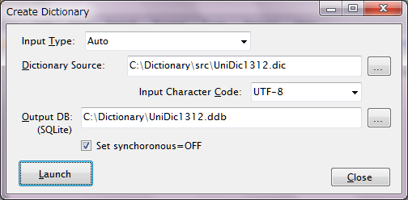

ここでは形態素編集を行う際に必要となる「辞書」の作成方法について説明します。
辞書の作成は、コーパスのインポートとほとんど同じと考えて構いません。ソースにはChaSen形式または!Mecab形式が使用可能で、文の解析結果の代わりに辞書の持つ全てのLexemeが並ぶ形を取ります。下記にその例を示します(Mecab|UniDic形式 --- unidic1.3.12)。
曖々 形状詞,タリ,*,*,*,*,アイアイ,曖々,曖々,アイアイ,アイアイ,漢,曖々,アイアイ,アイアイ,アイアイ,*,*,*,*,*,*,0,C2,*⏎ あいあい 形状詞,タリ,*,*,*,*,アイアイ,藹々,あいあい,アイアイ,アイアイ,漢,あいあい,アイアイ,アイアイ,アイアイ,*,*,*,*,*,*,0,C2,*⏎ 藹々 形状詞,タリ,*,*,*,*,アイアイ,藹々,藹々,アイアイ,アイアイ,漢,藹々,アイアイ,アイアイ,アイアイ,*,*,*,*,*,*,0,C2,*⏎ ......
参考として、UniDicのソースに含まれる、品詞ごとに分かれたcsvファイルを結合して上記のファイルを作成するためのPythonスクリプトを下記に示しておきます。
import csv
csvfiles = [
'AdjectivalNoun.csv',
'Adjective.csv',
'Adnoun.csv',
'Adverb.csv',
'AuxiliaryVerb.csv',
'Conjunction.csv',
'Filler.csv',
'Interjection.csv',
'Noun.common.csv',
'Noun.numeral.csv',
'Noun.proper.csv',
'Others.csv',
'Particle.csv',
'Prefix.csv',
'Pronoun.csv',
'Suffix.csv',
'Symbol.csv',
'Verb.csv'
]
outfile= 'unidic1312.dic'
writer = open(outfile, 'w')
writer.write(';\n')
writer.write(';LexiconName="unidic1.3.12"\n')
writer.write(';Format="Mecab|Cabocha|UniDic"\n')
writer.write(';\n')
writer.close()
writer = csv.writer(file(outfile, 'a'), lineterminator='\n')
for csvfile in csvfiles:
reader = csv.reader(file(csvfile, 'r'))
for row in reader:
writer.writerow([row[0]+"\t"+row[4], row[5], row[6], row[7], row[8], row[9],
row[10], row[11], row[12], row[13], row[14], row[15], row[16], row[17], row[18], row[19],
row[20], row[21], row[22], row[23], row[24], row[25], row[26], row[27], row[28]])
このようなファイルを用意したら、ChaKi.NETのメニューより、"Tools-Create Dictionary"を選択します。

"Dictionary Source"には、作成したテキストファイルを指定します。"Character Code"には使用した文字コードを指定します。"Output DB"には生成する辞書のファイル名を指定します。 辞書形式としてはSQLiteのファイルDBのみをサポートします。拡張子は".ddb"としますが、辞書DBはコーパスDBとスキーマ互換性がありますので、".db"でも構いません。但し、用途を区別するため、".ddb"とすることを推奨します。
"Set Synchronous=OFF"は、SQLiteのオプションで、Disk Writeの同期を省略するものです。速度が向上することがあります。
設定できたら"Launch"ボタンをクリックします。
なお、基本形（SurfaceをBaseで置き換えたLexeme）が同じ辞書内に見つからないなど、Warning Messageが出る場合があります。